Data mix w_ep vs ctl: Δcos +0.000, ΔADE +0.04 cm — null at 6 ep
Contact λ 0.1: Δcos −0.088 vs ctl, contact over-predicted 2.3×
10 % Sharpa: Δcos +0.002, ΔADE +0.48 cm vs ctl; Sharpa gap unchanged
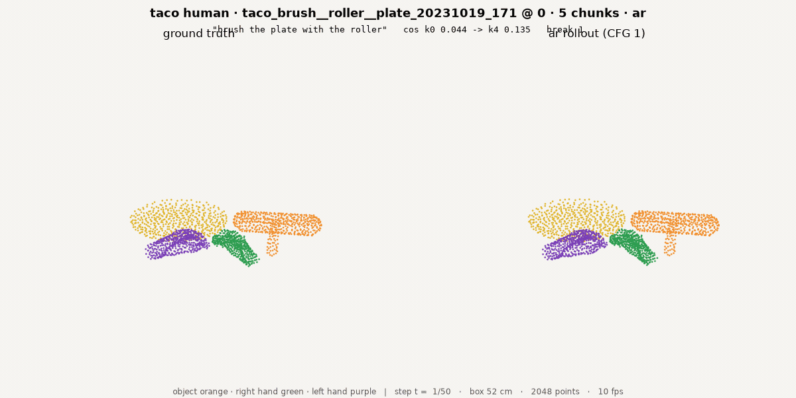
120M p7 @ 10.00 eff ep — taco ep 2488 "brush the plate with the roller", self-predicted, 1 s chunks, full episode6.00 eff ep, ICLR27 480 chunks — ctl 9.10 / w_ep 9.13 / x10_sharpa 9.58 / ciou_0p1 10.50 vs zero 9.08 cm · i5 base 8.74 vs its own 480-of-576 zero 8.86
three bases, never mixed — ieval 576 (rlwrld, zero 7.97 cm) · ieval 480 (ICLR27, 5 datasets, zero 9.08) · Sharpa 96 TACO, zero 4.99 · P-SERIES.md
Method: the GR-1 tabletop arena, read from source
Their arena, their metric, their command — so the number compares.
78 registered tasks, e.g. PnPAppleToDrawerClose — "pick up the apple, place it into the drawer and close the drawer" · figure from robocasa/robocasa-gr1-tabletop-tasks, credited
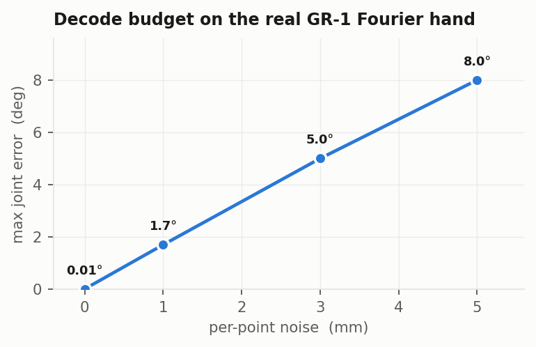
Decode is not the bottleneck: 1 mm of point noise costs 1.7°, 3 mm costs 5.0°
SUPERSEDED 09-03
GR-1 action-layout re-measure the loop ran end-to-end — see Results ③
arm IK (7 joints) + hand IK (6-dim coupled controller) drive the GR-1 in closed loop
MuJoCo · robosuite 1.5.1 · GR1ArmsAndWaistFourierHands · 17 DoF + 11 hinge joints/hand · ABSOLUTE joint-position actions · 20 Hz, 0.4 s replan vs our 1 s
Results
Scale-up, training length, data mix
19 ckpts: epochs buy direction, not placement · w_ep mix: no change vs ctl at 6 ep
Cross-embodiment transfer
GR-1 zero-shot closed loop
Contact auxiliary loss
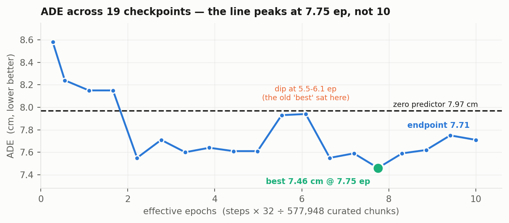
ieval 576 · flat from 2.21 eff ep · best 7.46 cm @ 7.75, endpoint 7.71 @ 10.00w_ep − ctl per dataset · 6.00 eff ep · 96 chunks each · every ΔADE CI spans zero
480 · 6 ep
cos
ADE
zero
Acc5
ctl
0.270
9.10
9.08
56.9
w_ep
0.270
9.13
9.08
57.1
i5 †
0.301
8.74
8.86
58.9
ADE / zero cm · Acc5 % (zAcc5 59.8) · † rlwrld i5, its own 480-of-576 subset
Verdict · ieval 576: best is 140k = 7.75 eff ep, not the endpoint — cos 0.234 → 0.295, ADE flat: epochs buy direction, not placement · ieval 480: episode-weighted mix: no change at 6 ep — paired w_ep − ctl Δcos +0.000 [−0.007, +0.007], ΔADE +0.04 cm [−0.08, +0.16]
120M @110k · 6.09 eff ep · single-chunk open-loop · 10 frames = 1 s taco, chunk 29206, "empty the cup with the kettle"
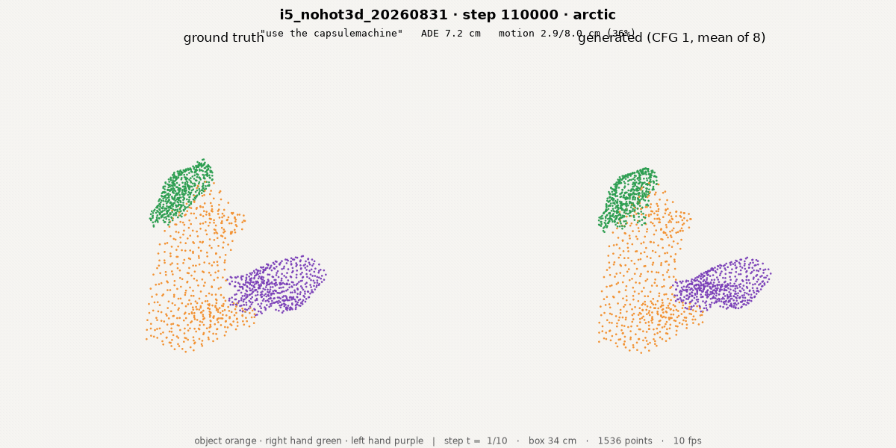
120M @110k · 6.09 eff ep · single-chunk open-loop · 10 frames = 1 s arctic, chunk 1988, "use the capsulemachine"
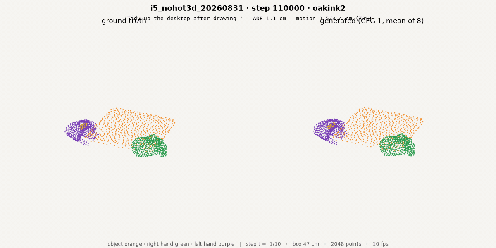
120M @110k · 6.09 eff ep · single-chunk open-loop · 10 frames = 1 s oakink2, chunk 18292, "Tidy up the desktop after drawing."
WILL UPDATE
p7 @ 7.75 eff ep (140k, the best ckpt) these three chunks · rendering now, job 152656
placeholder · the 6.09-epoch clips are not re-used as a stand-in
same chunk, camera and seed across arms, so the comparison is by construction · results/iviz/i5_110k/clips/ · val = held-out takes (5 % sequence hash), same tasks & objects as train
Rollouts · taco ep 2488 · 6.09 vs 10.00 eff ep
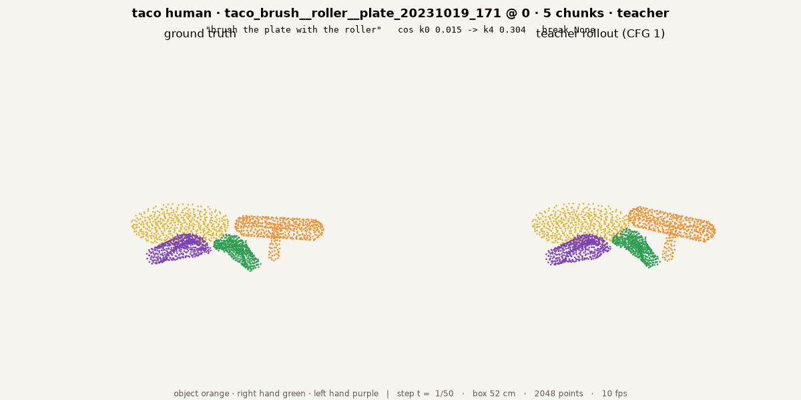
120M @110k · 6.09 eff ep · taco ep 2488 · "brush the plate with the roller" teacher-forced · 1 s chunks · full episode
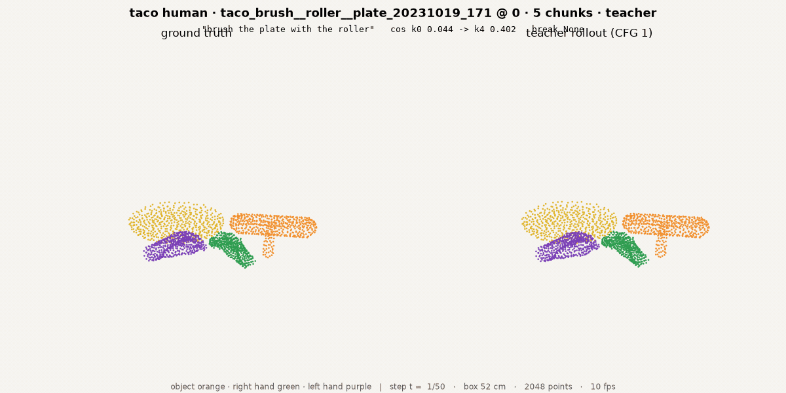
120M p7 @180,608 · 10.00 eff ep · taco ep 2488 · "brush the plate with the roller" teacher-forced · 1 s chunks · full episode
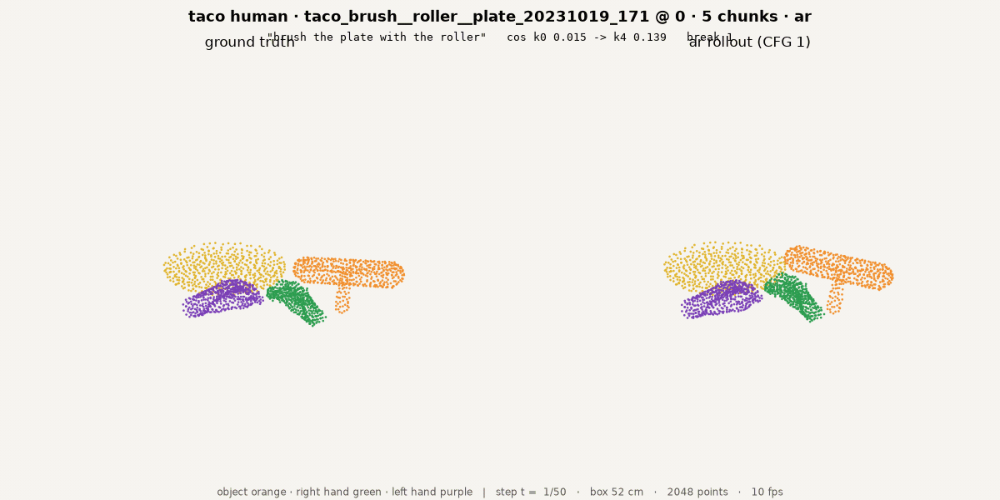
120M @110k · 6.09 eff ep · taco ep 2488 · "brush the plate with the roller" self-predicted · 1 s chunks · full episode120M p7 @180,608 · 10.00 eff ep · taco ep 2488 · "brush the plate with the roller" self-predicted · 1 s chunks · full episode
same episode, camera and seed · columns = training length, rows = previous chunk GT vs own output · val = held-out takes, tasks & objects seen in train
Rollouts · teacher-forced vs self-predicted · arctic, oakink2
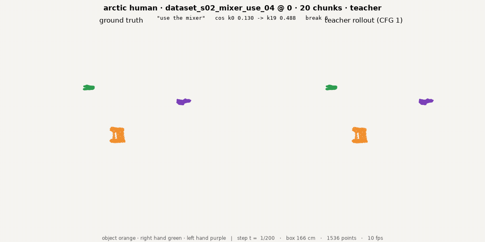
120M @110k · 6.09 eff ep · arctic ep 56 · "use the mixer" teacher-forced · 1 s chunks · full episode
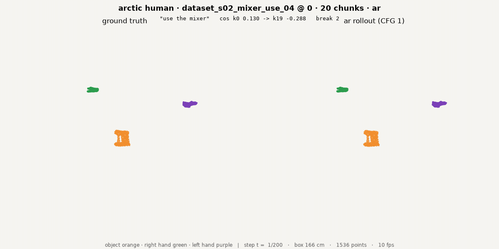
120M @110k · 6.09 eff ep · arctic ep 56 · "use the mixer" self-predicted · 1 s chunks · full episode
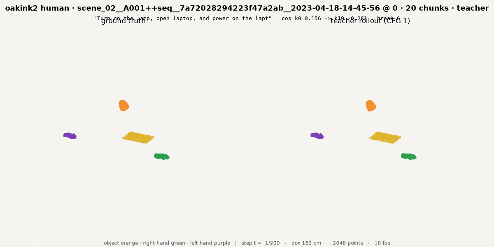
120M @110k · 6.09 eff ep · oakink2 ep 1486 · "turn on the lamp, open laptop, power on the laptop" (text unseen in train) teacher-forced · 1 s chunks · full episode
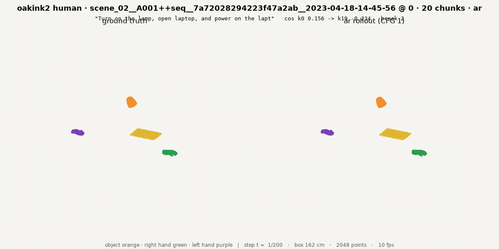
120M @110k · 6.09 eff ep · oakink2 ep 1486 · "turn on the lamp, open laptop, power on the laptop" (text unseen in train) self-predicted · 1 s chunks · full episode
same episode, camera and seed · rows = previous chunk GT vs own output · 10.00-ep counterparts not rendered · val = held-out takes, tasks & objects seen in train
Results
Scale-up and training length
Cross-embodiment transfer
10 % Sharpa at 6 ep vs ctl: Δcos +0.002, ΔADE +0.48 cm; Sharpa gap unchanged
GR-1 zero-shot closed loop
Contact auxiliary loss
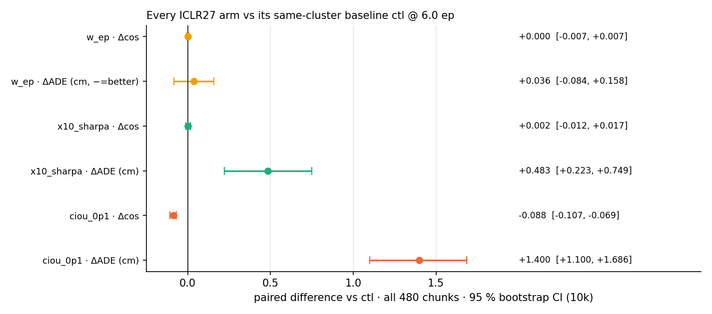
Paired vs the same-cluster ctl on all 480 chunks: x10_sharpa Δcos +0.002 [−0.012, +0.017], ΔADE +0.48 cm [+0.22, +0.75], ΔAcc5 −2.0 pp
Sharpa · 96 TACO
cos
coshand
ADE
Acc5 %
x10_sharpa6.00 ep
0.246
0.274
5.03
62.8
zero predictor
—
—
4.99
66.7
Sharpa hand, retargeted TACO · ADE in cm · ADE equals the zero predictor · human → Sharpa hand gap −0.022 [−0.066, +0.023], 192 pairs
Verdict · against its own baseline, 10 % Sharpa is neutral on direction (Δcos +0.002) and slightly worse on placement (ΔADE +0.48 cm, Acc5 −2.0 pp) · does not close the Sharpa gap (−0.022, CI spans zero) · corrects rev8: "below i5" was the cross-cluster offset (ctl − i5 = −0.026)
pairing fixes sequence, start, task, object · same corpus index → all 480 chunks pair · Sharpa gap: xeval, 192 pairs · eff ep = steps × 32 ÷ 591,977
Rollouts · human vs Sharpa hand, two lengths, two sizes
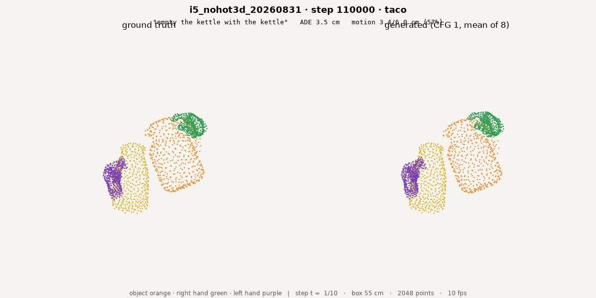
120M @110k · 6.09 eff ep · taco s33 "cut the bowl with the spatula" human hand
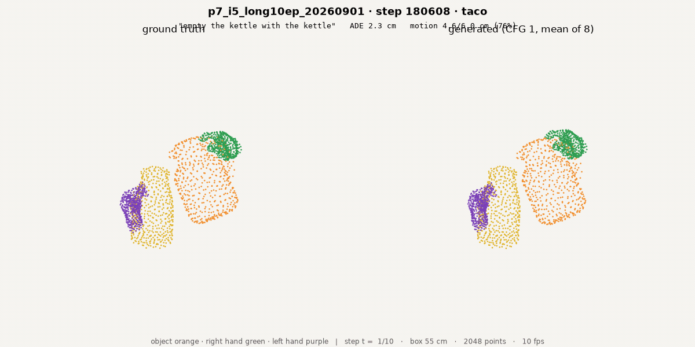
120M p7 @180,608 · 10.00 eff ep · taco s33 "cut the bowl with the spatula" human hand
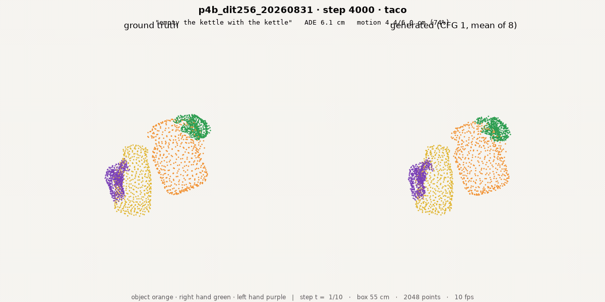
320M p4b @4k · 1.77 eff ep · taco s33 "cut the bowl with the spatula" human hand · only 320M weights that exist120M @110k · 6.09 eff ep · taco s33 "cut the bowl with the spatula" Sharpa hand, zero-shot
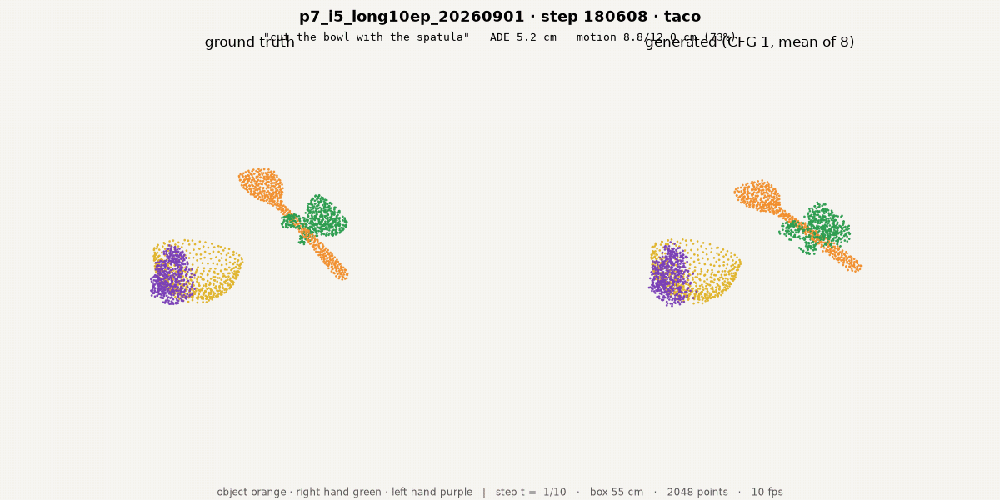
120M p7 @180,608 · 10.00 eff ep · taco s33 "cut the bowl with the spatula" Sharpa hand, zero-shot
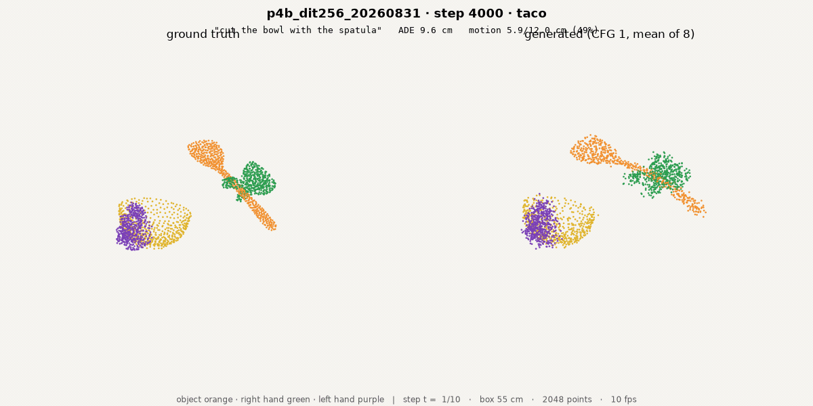
320M p4b @4k · 1.77 eff ep · taco s33 "cut the bowl with the spatula" Sharpa hand, zero-shot · run cancelled at 2.66 ep
same chunk, camera and seed · columns 1–2 = training length · 320M at 1.77 eff ep — NOT a size comparison · val = held-out takes, tasks & objects seen in train
Rollouts · human vs Sharpa hand · the 6-epoch arms
120M i5 base @110k · 6.09 eff ep · taco s33 "cut the bowl with the spatula" human hand
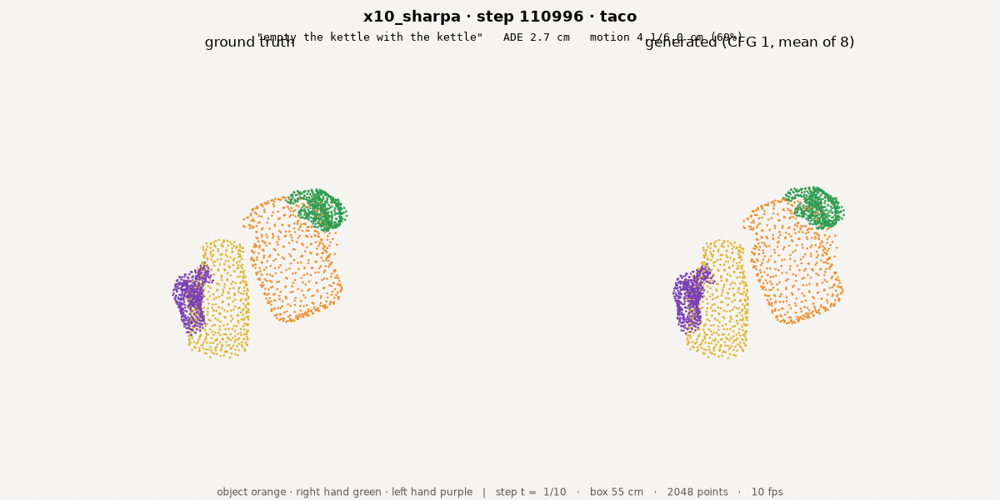
x10_sharpa @110,996 · 6.00 eff ep · taco s33 human hand
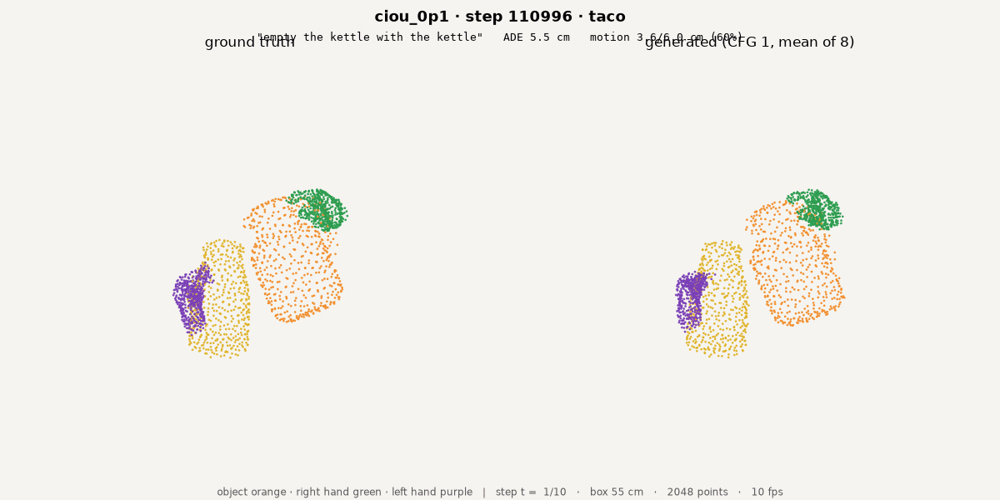
ciou_0p1 @110,996 · 6.00 eff ep · taco s33 human hand120M i5 base @110k · 6.09 eff ep · taco s33 "cut the bowl with the spatula" Sharpa hand, zero-shot
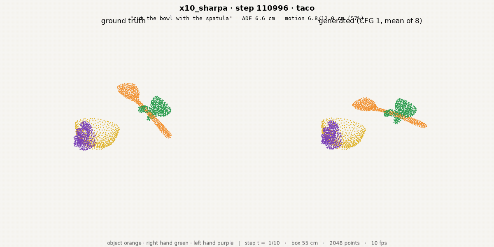
x10_sharpa @110,996 · 6.00 eff ep · taco s33, ICLR27 chunk 27627 Sharpa hand, co-trained · motion pred 6.80 / GT 11.99 cm · ADE 6.63
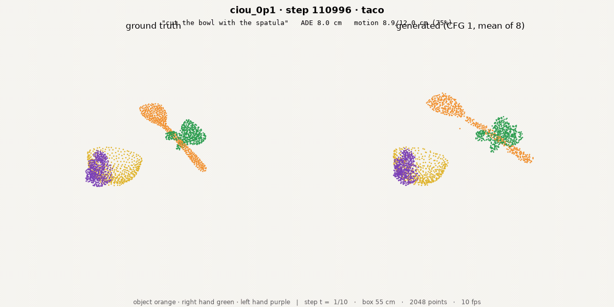
ciou_0p1 @110,996 · 6.00 eff ep · taco s33, ICLR27 chunk 27627 Sharpa hand, zero-shot · motion pred 8.93 / GT 11.99 cm · ADE 7.98
same taco s33 chunk, camera and seed · columns = arm at ≈6 eff ep · pred / GT motion from the render report (Sharpa clips only) · val = held-out takes
Rollouts · human vs Sharpa hand · ctl and w_ep
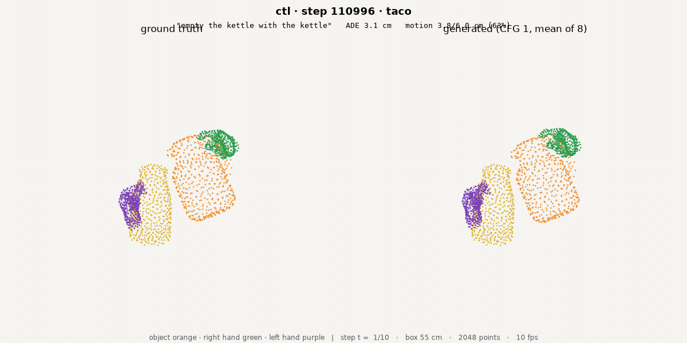
ctl @110,996 · 6.00 eff ep · taco s33, ICLR27 chunk 27627 "cut the bowl with the spatula" human hand · uniform chunk sampling
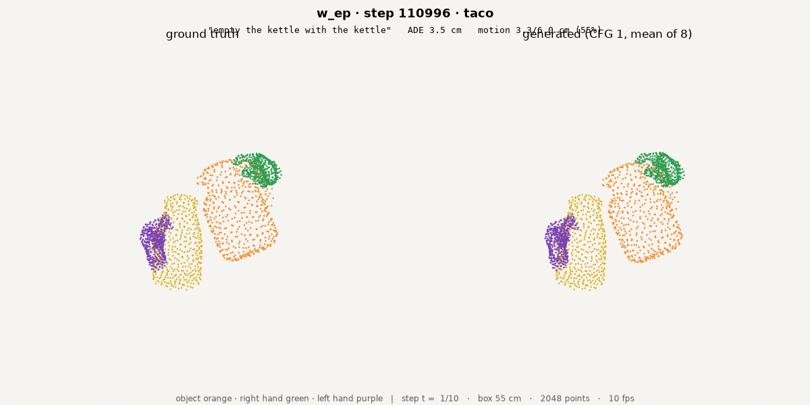
w_ep @110,996 · 6.00 eff ep · taco s33, ICLR27 chunk 27627 "cut the bowl with the spatula" human hand · episode-weighted mix
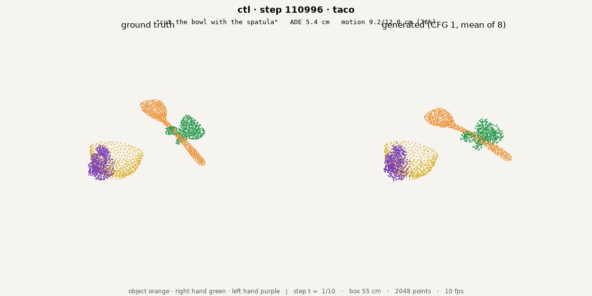
ctl @110,996 · 6.00 eff ep · taco s33, ICLR27 chunk 27627 Sharpa hand, zero-shot · motion pred 9.17 / GT 11.99 cm · ADE 5.37
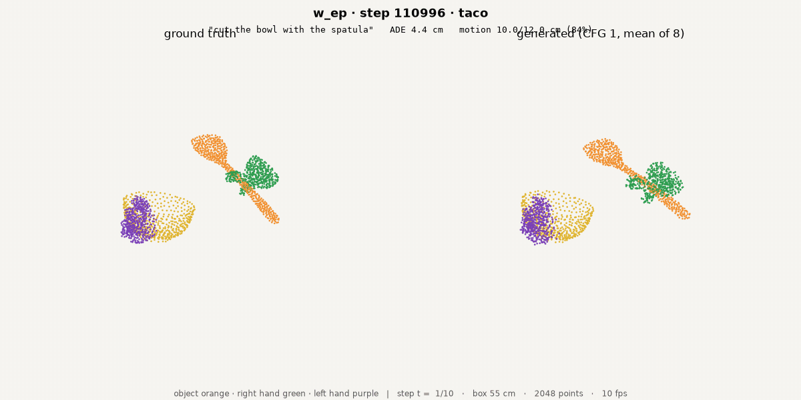
w_ep @110,996 · 6.00 eff ep · taco s33, ICLR27 chunk 27627 Sharpa hand, zero-shot · motion pred 10.01 / GT 11.99 cm · ADE 4.41
same taco s33 chunk, camera and seed as viz D · columns = arm · pred / GT motion from the render report (Sharpa clips only) · val = held-out takes
Pointer · sweeps, clips and setup live in deck #10 · GR-1 zero-shot · correction carried: the first input omitted the place target; the rerun adds it and the left hand · the 6-ep sweeps use the same bimanual input with the ctl and w_ep checkpoints
episode 0 · 720 steps · 90 replans · final hand→apple 16 cm · success noepisode 1 · 720 steps · 90 replans · final hand→apple 24 cm · success noepisode 2 · 720 steps · 90 replans · final hand→apple 26 cm · success no
PnPAppleToDrawerClose · right Fourier hand · human tag · 120M p7 @ 10.00 eff ep, no fine-tuning · 20 Hz sim, 36 s per clip · 4 frames executed per 1 s plan
Rollouts · GR-1 · ego view vs the model's input · episode 0
left: ego view · right: the 1,024 points the model sees (object orange, right hand green) with each replan's predicted 1 s flow as fading ghosts + 40 arrows · synchronized by step
camera fixed per episode, over the right shoulder (+35° azimuth so hand and object do not overlap) · 90 replans · 20 Hz · owner judges what the plan asks for vs what the arm delivers
Rollouts · GR-1 · ego view vs the model's input · episodes 1, 2
episode 1 · final hand→apple 24 cmepisode 2 · final hand→apple 26 cm
same rendering as the previous slide · predicted flow overlay updates every 8 steps
Data mix — w_ep = ctl at 6 ep → composition is not the lever at this length
Cross-cluster offset — ctl vs i5 −0.026 on 288 chunks → compare within one cluster only
Augmentation — no claim before jit1m / mirror land tonight (≈20:30 / 20:40)
grey italic rows = not landed · 6-ep numbers on the ICLR27 480 basis (zero 9.08 cm) · GR-1 6-ep sweeps report in deck #10 · clips: owner verifies
Appendix · corrections on the record (rev9, 2026-09-04 12:15)
Cross-cluster offset — the same recipe trained on ICLR27 (ctl) vs rlwrld (i5) differs by paired Δcos −0.026 [−0.045, −0.006] on the 288 shared chunks (ΔADE +0.12 cm [−0.25, +0.51]): different cluster, seed and data order. Rev8's "x10_sharpa sits below i5 (Δcos −0.023)" was mostly this offset — against its own baseline ctl, x10_sharpa is neutral on direction (+0.002 [−0.012, +0.017]) and slightly worse on ADE (+0.48 cm). ICLR27 arms are compared to ctl from here on; i5 numbers stay as the rlwrld reference only.
λ 1.0 / λ 0.001 preempted twice — background-QoS jobs 5471 / 5648 were preempted at 03:54 and again after 11:34, when the owner's arms 3 / 4 (jit1m, mirror) took the freed GPUs. They wait for the next idle slot; no ETA.
Appendix · corrections on the record (rev8, 2026-09-03 23:00)
ICLR27 job 5472 (λ 0.001) crashed 2 min in — two arms staged the corpus into the same node-local scratch at once (cp "File exists" storm). Staging now takes a node-local flock; resubmitted as job 5648.
The GR-1 input omitted the place target — only the pick object entered the point set while every instruction names a destination (container or fixture). The rerun (job 155019, done 09-04 00:20) adds it, and the left hand.
3-epoch intermediate evals were run for x10_sharpa and ciou_0p1 but dropped from the deck by owner decision — 6-epoch numbers only.
Paired comparisons vs the i5 base cover 288 of 480 chunks — taco and oakink2 chunk indices differ between the rlwrld and ICLR27 corpora (taco zero 4.47 vs 5.66 cm), so only arctic + dexycb + grab pair. Unpaired means still use all 480.
Appendix · corrections on the record (rev7, 2026-09-03 13:20)
The "/s3data 10× slowdown" was CPU starvation, not storage — the launcher requested no CPUs → 1 core per 2-GPU job → 3.1 s/step at 13–29 % GPU util; with 48 cores it is 0.29 s/step at 100 %. S3 was never the bottleneck.
Two launcher/trainer bugs cost the night — /scratch staging without preserved mtimes (manifest newer than its motion_valid cache → every arm crashed at start) and a per-rank wall-clock checkpoint decision under DDP (rank barrier vs gradient all-reduce → NCCL abort). Both fixed and verified; no 09-03-morning results exist.
"Close the contact workstream" (rev6) is withdrawn — the contact term is validated non-inert (8.6 % of the loss at λ 0.1); the new soft-IoU form is what is training (jobs 5470–5472).
Every cross-embodiment CI published before 09-03 was a 2/3 subsample — e.g. paired gap −0.052 [−0.091, −0.015]: xeval keyed chunks by batch position, collapsing 384 pairs to 258. Fixed (keyed by sequence:start). Tonight's x10_sharpa interval is a different estimator — not comparable to the old ones.
All evaluators now carry a zero-motion reference — z5 / z10 / zADE / zFDE; contact zIoU / zprec / zrec. Contact IoU must be read against its own zero column.
Appendix · ladder · evidence · GR-1 run · cut list
ieval 576 (rlwrld) zero 7.97 cm · ieval 480 (ICLR27, no hot3d) zero 9.08, i5's own 480 subset 8.86 · Sharpa 96 TACO zero 4.99 · paired vs ctl = all 480 · vs i5 = 288.
GR-1 sweep
44 tasks × 3 eps · p7 @ 10.00 eff ep · 2/117, median 23 cm → deck #10 · rerun 155019 (bimanual + destination) 1/116, median 18.0 · 6-ep sweeps ctl / w_ep 155808 / 155809 running.
Pipeline
scene + robot as ONE labeled point set (1024 pts) → predicted total scene flow → per-link Procrustes → arm IK (7 joints) + hand IK (6-dim coupled controller).
Pilot
PnPAppleToDrawerClose, 3 eps: predicted 12–14 cm/chunk vs 5–7 cm execution error · arm-IK residual 24–35 mm · final 16 / 24 / 26 cm.
![Grouped bar chart of ADE in centimetres at 6.0 effective epochs on 480 stratified chunks, per dataset and overall, for five arms: the i5 base in blue, ctl in dark green, w_ep in yellow, x10_sharpa in teal and ciou_0p1 in orange, with a dashed zero-motion-predictor line per group. Overall: i5 8.7 against its own zero 8.86; ctl 9.1, w_ep 9.1, x10_sharpa 9.6 and ciou_0p1 10.5 against zero 9.08. Per dataset: taco 4.7 / 5.6 / 5.6 / 5.6 / 8.1 against 5.66, arctic 10.4 / 10.2 / 10.3 / 11.4 / 11.3 against 9.34, dexycb 9.0 / 9.5 / 9.4 / 8.9 / 10.3 against 10.04, oakink2 2.3 / 2.8 / 2.8 / 3.1 / 4.0 against 2.62, grab 17.4 / 17.4 / 17.5 / 18.9 / 18.9 against 17.75.](assets/fig_ep06_ade.png)

![Two forest plots of the paired difference w_ep minus ctl per dataset, 96 chunks each, with 95 percent bootstrap intervals; each label shows how the sampling mass changed from uniform to episode-weighted. Left, delta direction cosine: taco up 16 to 42 percent, minus 0.015 [minus 0.029, plus 0.002]; arctic down 11 to 5, plus 0.006; dexycb up 2.5 to 19, plus 0.012 [minus 0.000, plus 0.024]; oakink2 down 49 to 9, minus 0.003; grab up 21 to 25, plus 0.000. Right, delta ADE in centimetres: taco plus 0.04, arctic plus 0.09, dexycb minus 0.02, oakink2 minus 0.01, grab plus 0.08 — every interval crosses zero.](assets/fig_ep06_wep_vs_ctl.png)